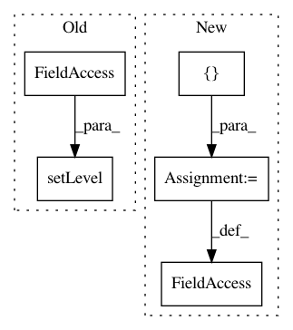

192a807b39bc029c273c2d1349fb73850ed9484c,nni/retiarii/nn/pytorch/nn.py,,,#,7
Before Change
from typing import (Any, Tuple, List, Optional)
_logger = logging.getLogger(__name__)
_logger.setLevel(logging.INFO)
_records = None
def enable_record_args():
After Change
_logger = logging.getLogger(__name__)
__all__ = [
"LayerChoice", "InputChoice", "Placeholder",
"Module", "Sequential", "ModuleList", // TODO: "ModuleDict", "ParameterList", "ParameterDict",
"Identity", "Linear", "Conv1d", "Conv2d", "Conv3d", "ConvTranspose1d",
"ConvTranspose2d", "ConvTranspose3d", "Threshold", "ReLU", "Hardtanh", "ReLU6",
"Sigmoid", "Tanh", "Softmax", "Softmax2d", "LogSoftmax", "ELU", "SELU", "CELU", "GLU", "GELU", "Hardshrink",
"LeakyReLU", "LogSigmoid", "Softplus", "Softshrink", "MultiheadAttention", "PReLU", "Softsign", "Softmin",
"Tanhshrink", "RReLU", "AvgPool1d", "AvgPool2d", "AvgPool3d", "MaxPool1d", "MaxPool2d",
"MaxPool3d", "MaxUnpool1d", "MaxUnpool2d", "MaxUnpool3d", "FractionalMaxPool2d", "FractionalMaxPool3d",
"LPPool1d", "LPPool2d", "LocalResponseNorm", "BatchNorm1d", "BatchNorm2d", "BatchNorm3d", "InstanceNorm1d",
"InstanceNorm2d", "InstanceNorm3d", "LayerNorm", "GroupNorm", "SyncBatchNorm",
"Dropout", "Dropout2d", "Dropout3d", "AlphaDropout", "FeatureAlphaDropout",
"ReflectionPad1d", "ReflectionPad2d", "ReplicationPad2d", "ReplicationPad1d", "ReplicationPad3d",
"CrossMapLRN2d", "Embedding", "EmbeddingBag", "RNNBase", "RNN", "LSTM", "GRU", "RNNCellBase", "RNNCell",
"LSTMCell", "GRUCell", "PixelShuffle", "Upsample", "UpsamplingNearest2d", "UpsamplingBilinear2d",
"PairwiseDistance", "AdaptiveMaxPool1d", "AdaptiveMaxPool2d", "AdaptiveMaxPool3d", "AdaptiveAvgPool1d",
"AdaptiveAvgPool2d", "AdaptiveAvgPool3d", "TripletMarginLoss", "ZeroPad2d", "ConstantPad1d", "ConstantPad2d",
"ConstantPad3d", "Bilinear", "CosineSimilarity", "Unfold", "Fold",
"AdaptiveLogSoftmaxWithLoss", "TransformerEncoder", "TransformerDecoder",
"TransformerEncoderLayer", "TransformerDecoderLayer", "Transformer",
//"LazyLinear", "LazyConv1d", "LazyConv2d", "LazyConv3d",
//"LazyConvTranspose1d", "LazyConvTranspose2d", "LazyConvTranspose3d",
//"Unflatten", "SiLU", "TripletMarginWithDistanceLoss", "ChannelShuffle",
"Flatten", "Hardsigmoid", "Hardswish"
]
class LayerChoice(nn.Module):
def __init__(self, op_candidates, reduction=None, return_mask=False, key=None):
In pattern: SUPERPATTERN
Frequency: 3
Non-data size: 5
Instances
Project Name: Microsoft/nni
Commit Name: 192a807b39bc029c273c2d1349fb73850ed9484c
Time: 2020-12-13
Author: Quanlu.Zhang@microsoft.com
File Name: nni/retiarii/nn/pytorch/nn.py
Class Name:
Method Name:
Project Name: kubeflow/kubeflow
Commit Name: 6156203c7ee355090b885b87a45b4978829c00a6
Time: 2018-05-14
Author: agwl@google.com
File Name: testing/test_jsonnet.py
Class Name:
Method Name:
Project Name: Microsoft/nni
Commit Name: a63f2ed352ef609270b194ad6c2b1e7cb4f98586
Time: 2019-11-21
Author: 40699903+liuzhe-lz@users.noreply.github.com
File Name: src/sdk/pynni/nni/platform/standalone.py
Class Name:
Method Name: